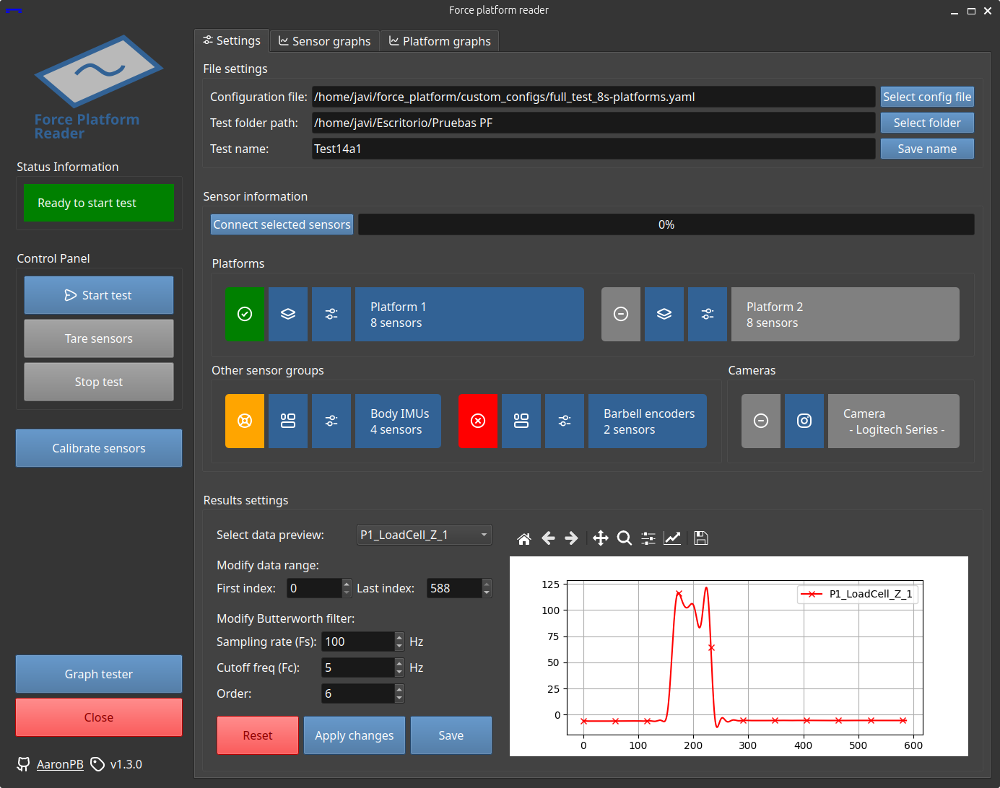
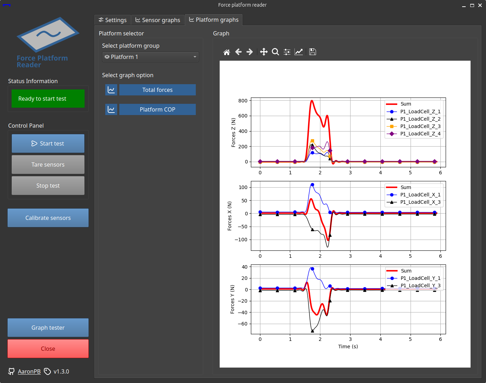

-
Set up in 10 minutes
Get up and running in minutes
-
Sensor compatibility
The Phidget Load Cell and Encoder interfaces are compatible with a wide range of sensors
-
Highly configurable
Sensors are defined into group types, working in a modular and flexible way
-
Data recording and CSV export
It supports sampling rates up to 100 Hz and CSV data export, with or without sensor calibration parameters
-
Calibration feature
It includes an interactive calibration panel to adjust sensor calibration parameters
-
Open Source, GPL-3.0
The software is licensed under the GNU GPL-3.0 and available on GitHub
About the Software

A python software for synchronized data management of specific force platforms sensors compatible with Phidget API and other sensor types such as IMUs.
This project is part of the author's master's thesis in industrial engineering at the University of Almería and funded by the "Programa Operativo FEDER 2014-2020" and the Andalusian "Consejería de Transformación Económica, Industria, Conocimiento y Universidades", under the project UAL2020-CTS-A2100.
More information about the project


A flexible configuration
The configuration file uses YAML format for better readability, and all sensors are stored in a single configuration section for a more structured setup.
Sensors are then organized into sensor groups. If a sensor does not belong to a group, it will be ignored.
Sensor groups are fully flexible
You can define a group with sensors of the same type or different types.
Within the program, you can enable or disable specific sensors within a group or an entire group.
For more details, check out the following documentation page:
Just simple and straightforward settings.
You can even import customized configuration files with different sensors and group setups.
settings:
custom_config_path: null
test:
name: Name
folder_path: /tests/
results:
save_raw: true
save_calib: true
recording:
data_interval_ms: 10
tare_data_amount: 300
calibration:
data_interval_ms: 10
data_amount: 300
Group your sensors to get specific graphs based on the group type and enhance data organization in CSV exports.
sensor_groups:
imus:
name: Body IMUs
type: GROUP_DEFAULT
read: true
sensor_list:
- imu_1
- imu_2
- imu_3
barbell_encoders:
name: Barbell encoders
type: GROUP_DEFAULT
read: true
sensor_list:
- encoder_1
- encoder_2
Define all your sensors in this section.
sensors:
encoder_1:
name: Encoder_Z_1
type: SENSOR_ENCODER
read: true
connection:
channel: 0
serial: 641800
initial_position: 0
properties:
serial_number: AAAA
max_length: 2500mm
calibration:
slope: 0.01875
intercept: 0.0
Data graphs and CSV export

You can visualize the recorded data directly from the graph tabs.
There are graphs for each recorded sensor, as well as specific ones depending on the sensor group type, such as force platforms.
It is also possible to trim the data and adjust the Butterworth filter used for signal processing.
For data export, the CSV format is used, allowing both raw data export and processed data export using the sensors' calibration parameters.
Software versions
Legacy version
This version was originally developed for internal use, with Python and QT.
Install the required dependencies and clone the project into your workspace. You can follow this steps to set it up in a few minutes.
Only Linux distributions are supported, preferably Ubuntu 22.04 LTS
The project has been developed and tested in Ubuntu 22.04 LTS. Phidget does support Windows and MacOS, but Taobotics IMUs do not.
-
Step 1: Install dependencies, UV and clone the repository
curl -fsSL https://www.phidgets.com/downloads/setup_linux | sudo -E bash - &&\ sudo apt-get install -y libphidget22sudo add-apt-repository ppa:joseluisblancoc/mrpt &&\ sudo apt install libmrpt-dev mrpt-apps &&\ sudo apt install python3-pymrptcurl -LsSf https://astral.sh/uv/install.sh | shgit clone https://github.com/AaronPB/force_platform.git -
Step 2: UV install and run the software
cd to/the/force_platform/repository &&\ uv venv &&\ uv pip install -r uv.lockEnable
include-system-site-packagesin.venv/pyvenv.cfguv run python main.py
Docker version
An optimized and comfortable option, with the main features.
Simple to install using Docker, and with all the documentation available inside the app, ready to go!
Available for Windows and Linux distros
The project has been tested in Windows 11, Ubuntu 22.04 LTS and Fedora Workstation 41. It has not been tested in MacOS, but it has a high chance to also work, as it is a dockerized version.
-
Step 1: Run a new docker container
Just a quick
docker runin your docker environment and you are ready to go!docker run -d --name example_app \ --device /dev/bus/usb \ --device /dev/ttyUSB0 \ --device /dev/ttyUSB1 \ -p 8501:8501 \ aaronrpb/force-platform-appdocker run -d --name example_app \ --device /dev/bus/usb \ --device /dev/ttyUSB0 \ --device /dev/ttyUSB1 \ -p 8501:8501 \ ghcr.io/aaronpb/force-platform-appAdd or remove arguments depending on your setup. For more information click below.
Citation
If you are using this software, please use the following BibTeX citation to reference this work:
@article{POYATOSBAKKER2026120933,
title = {An affordable open-source 3D force platform and a wide force range calibration method},
journal = {Measurement},
volume = {271},
pages = {120933},
year = {2026},
issn = {0263-2241},
doi = {https://doi.org/10.1016/j.measurement.2026.120933},
url = {https://www.sciencedirect.com/science/article/pii/S0263224126006421},
author = {Aarón-Raúl Poyatos-Bakker and Javier López-Martínez and Daniel García-Vallejo and José M. Muyor and José-Luis Blanco-Claraco},
keywords = {Force platform, Ground reaction forces, Open software, In-situ calibration, Calibration matrix, Biomechanical analysis}
}